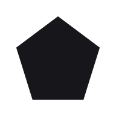

Everything Facet ships, live: every token, component, block,
template and app-feel behaviour, with its exact copy-paste code
and the same instructions an AI reads. Pick a category to browse
its pieces as cards, or jump straight to anything from the index.
Eighteen type roles, one per job. The core seven: headings,
body text, code and labels, quotes, long-form reading, big numbers
and a handwritten pen. The extended set: a loud hero display, a
signature script, a typewriter, a receipt printer, a real barcode,
a pixel face, a children's face, and native faces for Japanese,
Chinese, Korean and Hindi (Russian is covered by the core faces).
The theme picks the actual fonts; a page only asks for the role,
and each card names the font the active theme chose.
--font-heading
The quick brown fox jumps over the lazy dog 0123456789 & ?! @ # % * { } </>
The quick brown fox jumps over the lazy dog 0123456789 & ?! @ # % * { } </>
Used for: Receipts · order confirmations · tickets · counters · timestamps.
--font-barcode
FACET-0123456789
Used for: Tickets · invoices · shipping labels · passes — the text IS a scannable Code 128 barcode.
--font-pixel
The quick brown fox jumps over the lazy dog 0123456789 & ?! @ # % * { } </>
Used for: Retro UIs · game screens · loading states · badges · easter eggs.
--font-children
The quick brown fox jumps over the lazy dog 0123456789 & ?! @ # % * { } </>
Used for: Kids' products · playful onboarding · stickers · game menus · celebration screens.
--font-japanese
いろはにほへと ちりぬるを 0123456789 & ?!
Used for: Japanese headings and accents (data-language variants) · traditional brush, formal.
--font-chinese
视野无限广 窗外有蓝天 0123456789 & ?!
Used for: Chinese headings and accents · regular-script brush, traditional.
--font-korean
다람쥐 헌 쳇바퀴에 타고파 0123456789 & ?!
Used for: Korean headings and accents · brush calligraphy.
--font-devanagari
सारे जहाँ से अच्छा 0123456789 & ?!
Used for: Hindi and Devanagari headings and accents · traditional book hand, elegant.
/* Components never name a face — they ask for the role. */
h1, h2, h3 { font-family: var(--font-heading); }
body { font-family: var(--font-body); }
code, kbd { font-family: var(--font-mono); }
blockquote { font-family: var(--font-quote); }
article p { font-family: var(--font-reading); }
.big-number { font-family: var(--font-numeric); }
.margin-note { font-family: var(--font-hand); }
.sign-off { font-family: var(--font-signature); }
.ticket-id { font-family: var(--font-barcode); }
:lang(ja) { font-family: var(--font-japanese); }
Typography
The scale in use, as a real page of writing. Every block below is
a raw HTML tag styled by the base layer; the mono tag under each
names the token doing the work. Each font stack ends in a system
fallback, so text renders instantly and survives a font failing to
load.
Money, made concrete
--text-display · hero statements and big numbers
A heading that opens the page
--text-h1 · one per page
Body text carries almost every word on any page, set at a
comfortable reading measure of 65 characters with a relaxed line
height. It holds strong text, a
link with a quiet underline, inline
code, and a keyboard key like Esc without
breaking rhythm.
--text-body · --leading-body 1.6
A section heading inside the page
--text-h2
Points under a heading sit at body size
With four pixels of space between lines
And the list marker hanging in the padding
A third-level heading, interspersed
--text-h3
Headings take their own face (--font-heading) at
--weight-heading, with line-height and letter-spacing
that tighten as the type grows — display and h1 tightest, h3–h6
snug — which is what keeps the whole page feeling like one voice.
A quote steps aside from the flow: indented, muted, italic, with
the accent as its spine.
blockquote
The eyebrow label
.eyebrow · --text-caption, --weight-strong, --tracking-wide caps — the small thick label above a heading or a menu group
Small text handles secondary lines: bylines, helper notes, legal
asides that still deserve reading.
--text-footnote
A caption or footnote, the finest print on the scale — image
credits, field hints, the words under a result.
--text-caption · --text-muted
<h1>A heading that opens the page</h1>
<p>Body text at a comfortable measure, holding <strong>strong text</strong>,
<a href="#">a link</a>, inline <code>code</code> and a key like <kbd>Esc</kbd>.</p>
<blockquote>A quote steps aside from the flow.</blockquote>
<p><small>Small text for secondary lines.</small></p>
Color
The color system: a neutral base plus three accent ranks, shown as the same interface in light and dark. Components pick ranks, never raw colors, so one theme block restyles everything.
Beside the ranks sits the vivid palette — five bright decorative
colors named by rank, like the accents: red, yellow, green, blue,
purple. Decoration only — card tints (mixed into the surface),
charts, playful accents — never semantic status; a theme may
re-tune them. The raw brights are fills-only; when the palette
must write — a tinted label, a stat on a washed card — each color
carries a text-safe companion, the same hue at readable contrast
in light and dark.
Every value lives once in facet.css as
a variable named by role — --surface, never
--gray-100 — so a theme is one block of overrides and
nothing downstream changes. Click any swatch below to copy its
token.
--color-1
--color-2
--color-3
--color-4
--color-5
--color-1-text
--color-2-text
--color-3-text
--color-4-text
--color-5-text
Light
Ink on paper. Muted text steps back for hints and captions.
--background
--surface
--text
--text-muted
--border
--accent-1
--accent-2
--accent-3
Saved ✓ ·
Expiring soon ·
Failed ·
3 updates
Dark
Paper on ink. Muted text steps back for hints and captions.
--background
--surface
--text
--text-muted
--border
--accent-1
--accent-2
--accent-3
Saved ✓ ·
Expiring soon ·
Failed ·
3 updates
Custom accent — the override recipe below, running live: this row
overrides accent-1's four tokens on its own container, and every
component using the rank follows.
The code is the custom-accent recipe: your own brand color on any
accent rank, one small block of CSS, a supported feature. Override
a rank's four tokens (the color, its hover, its pressed, and the
on-color for text sitting on it) on :root for the whole page or on
any element for a subtree, and check the on-color still passes AA.
facet.set({"--accent-1": "..."}) is the same override applied live
at runtime.
/* Your accent, one block. Rank tokens only — every component follows. */
:root {
--accent-1: #0F6FDE;
--accent-1-hover: #0B5FC2;
--accent-1-pressed: #0850A6;
--on-accent-1: #FFFFFF;
}
Spacing
Spacing is named by intent, not by number: reach for
--space-card or --space-section, never a
step on a scale. One global control —
data-density="small|medium|large" — tightens or opens
the whole system at once, and a theme sets its own rhythm. Below,
real pieces sit on a tinted ground; the tint showing through is the
token at work.
The full set, each named for where it belongs:
--space-tight (bound pairs like a label and its field),
--space-control (inside buttons and inputs),
--space-inline (row gaps), --space-stack
(default gap between blocks), --space-card (card
padding), --space-page (page margins),
--space-section (between sections),
--space-hero (the biggest breaks) and
--space-pin (the fixed 20px inset a viewport-pinned
panel keeps from the screen edges — exact pixels, never
density-scaled, so pinned panels fit exactly and never move with
the scroll). Container widths cap the horizontal rhythm:
--width-narrow 40rem for prose and calculators,
--width-default 64rem for most pages,
--width-wide 80rem for dashboards.
Gaps inside a control row · --space-control
Card padding · --space-card
The card's content box. Everything between this edge and the
tinted edge is --space-card of padding.
Stack gap between fields · --space-stack
Field one
Field two
Field three
Between page sections · --space-section
The end of one section
The start of the next
<section class="card stack"> <!-- --space-card padding, --space-stack between blocks -->
<h2>Card title</h2>
<p class="row"> <!-- --space-inline between the buttons -->
<button class="btn btn-primary">Save</button>
<button class="btn">Cancel</button>
</p>
</section>
Shape and elevation
Small radii on controls, medium on cards, large on overlays, pill
for chips and thumbs. Shadows stay subtle and flat in every theme.
How things move is its own system — see
Motion just below.
--radius-control
--radius-panel
--radius-card
--radius-pill
--shadow-raised
--shadow-floating
--shadow-overlay
/* Radii and shadows by role — a theme retunes them all at once. */
.panel { border-radius: var(--radius-card); box-shadow: var(--shadow-raised); }
.menu { border-radius: var(--radius-panel); box-shadow: var(--shadow-overlay); }
.chip { border-radius: var(--radius-pill); }
Motion tokens
How everything moves, as one system: three durations and three
easing curves that every component reads, plus one personality
switch — Lively, Calm or Off — that retunes them all at once.
The parallax, shine and idle drift ride the same engine, and
reduced motion always wins.
Button press
Hold a button down, then let go — it sinks under the finger and
springs back on release. The second one also fires a toast, so
you can watch an arrival and exit.
Speed & easing
Three dots, one per duration token, each on its own easing
curve — fast is 150ms, normal 300ms, slow 600ms. Press Replay;
switch the personality above and the same dots run differently.
--duration-fast · --ease-out
--duration-normal · --ease-in-out
--duration-slow · --ease-spring
Always looping
The spinner and the loading shimmer never stop, by design.
The ambient engine
Parallax and shine on the cards below, driven by one source.
Idle is the default: it loops on its own every few seconds
and nothing follows you. The third mode follows the device —
your cursor here on a desktop or trackpad, the tilt of a
phone or tablet in your hands (iPhone and iPad ask
permission) — and plays the idle loop whenever you go still.
data-parallax="10"
I drift with the motion
data-parallax="22"
I drift further
data-shine
Light travels across me
/* Anything you animate reads the same tokens the library uses. */
.panel { transition: box-shadow var(--duration-fast) var(--ease-out); }
.sheet { transition: translate var(--duration-slow) var(--ease-spring); }
<!-- One attribute retunes the whole system -->
<html data-motion="calm"> <!-- or "off"; reduced motion always wins -->
<!-- The same engine moves and lights elements -->
<img src="hero.png" data-parallax="12" alt="">
<button class="btn btn-primary" data-shine>Get started</button>
Base styles
The look of raw HTML itself. Around thirty bare tags are already
designed before any class is added: headings, paragraphs, links,
lists, quotes, tables, images, rules, code and keyboard keys, and
the whole form family — labels, text inputs, selects, textareas,
file and date pickers, checkboxes, radios and buttons. One visible
focus ring, selection colors, thin scrollbars and the print base
come with it, and controls refuse accidental text selection while
every piece of content stays selectable. The working tags are below; the text tags — headings,
paragraphs, lists, quotes, small print — are shown as a full page
of writing on the Typography page. If a page only carries writing
and simple forms, it may need no classes at all.
A raw table
Scale step
Size
Used for
--space-control
8px
Gaps inside controls
--space-stack
16px
Default stack gap
--space-section
48px
Between page sections
Raw checks and radios
A raw button, inline styles and the focus ring
Inline code, a key like Esc and
a link are styled too — and press
Tab here to see the focus ring every control shares.
Even the horizontal rule above and this small print are the base layer.
<table>
<thead><tr><th>Scale step</th><th>Size</th></tr></thead>
<tbody><tr><td>--space-stack</td><td>16px</td></tr></tbody>
</table>
<label for="amount">A raw text input</label>
<input id="amount" type="text" placeholder="Type here">
<select><option>Monthly</option><option>Yearly</option></select>
<textarea rows="2"></textarea>
<button>A raw button</button>
<p>No classes anywhere — base styles only.</p>
Print & export
Printing built in. Mark what belongs on paper and what does not, and every page prints clean: white ground, folds opened, nothing cut in half. A save-as-PDF button is one attribute.
Prints only — invisible on screenScreen only — never prints
The two badges demonstrate the roles: open the print preview and they trade places.
Layout primitives
Container
The page-width wrapper. It centers the content, caps how wide it grows, and keeps the side padding even on every screen.
Content sits here: centered, width-capped, themed side padding. The dashed edge is this demo's bounds.
Stack
Puts blocks one above the other with an even, themed gap. The default way to space a column of anything.
First block
Second block
Third block
Row
Puts things side by side with an even gap, wrapping onto new lines when the room runs out.
Updated a minute ago
Grid
A grid of equal columns — as many as fit the screen, one on phones, with no breakpoints to write.
One
Two
Three
Four
Snap section
Full-screen sections that snap one screen at a time as you scroll — the feel of a modern product page, built to work on iPhone.
Intro
What this page tells you, in one line.
Inputs
Number inputs and sliders, prefilled with examples.
Results
A verdict-first result block, recalculating live.
View stack
The app shell. Each section is a screen, one shows at a time, and plain links move between them — with the browser's back button working.
Its own scroll container when it overflows. Answer
Result
facet.views.back() returns along the trail.
Forms & controls
Button
The action element, on a <button> or an <a>. Style, size and shape are independent options you combine; the icon button is the same element reduced to one glyph. Pick a variant, set its options, and copy the exact button.
Every icon button needs an aria-label — the icon alone says nothing.
Switch, checkbox, radio
The yes/no and pick-one controls: a checkbox for independent choices, a radio for one of a few, and a switch for a setting that takes effect the instant it flips. All three are the native input wearing the theme — real form value, real keyboard, nothing custom to break. Wrap each in a label so the whole line is tappable; add a description line and push the control to the edge for a settings row.
The settings-row shape · .check-text + .check-row-split
Stepper & segmented control
A count between minus and plus buttons, and a segmented control for flipping between a few views of the same thing. The stepper wraps a real number input, so its buttons obey the min, max and step you set — each greys out on its own at the end of the range. The segmented control is radios underneath, so the value, keyboard arrows and screen-reader behaviour are all native.
Segmented control · inline, and full-width with a disabled option
Fields: input, textarea, select, search
One label.field pattern wraps every control — text, select, textarea, search — with a hint line and validation built in. The input type sets the mobile keyboard, autofill and native check; inputmode fine-tunes the keyboard on its own. Add data-reveal to a password field for a show/hide eye, or data-field-actions to any field for a Clear × and a ⋯ menu (Copy, Paste, Select all, Undo, Redo).
Controls — one pattern, any kind
Types & keyboards — the right type gives the right mobile keyboard, validation and autofill
In-field actions — data-field-actions adds Clear × and a ⋯ menu (Copy · Paste · Select all · Undo · Redo)
Validation — data-status on the field + a .field-msg line
Readonly · disabled
<!-- one pattern for every control: swap input for select / textarea / search -->
<label class="field">
<span class="field-label">Full name</span>
<input type="text" placeholder="Ada Lovelace">
<span class="field-hint">As it appears on the invoice.</span>
</label>
<!-- type + inputmode + autocomplete: the right keyboard, autofill and check -->
<input type="email" inputmode="email" autocomplete="email">
<input type="tel" inputmode="tel" autocomplete="tel">
<input type="url" inputmode="url" autocomplete="url">
<input type="text" inputmode="numeric" pattern="[0-9]*" autocomplete="one-time-code">
<!-- password with a show/hide eye: one attribute -->
<label class="field" data-reveal>
<span class="field-label">Password</span>
<input type="password" autocomplete="current-password">
</label>
<!-- in-field actions: one attribute, facet.js injects × and the ⋯ menu -->
<label class="field" data-field-actions>
<span class="field-label">API key</span>
<input type="text" value="sk-facet-9f2ac41e8b" aria-label="API key">
</label>
<!-- validation: data-status on the field, a .field-msg under it -->
<label class="field" data-status="error">
<span class="field-label">Email</span>
<input type="email" value="nope@" aria-invalid="true">
<span class="field-msg">That address is missing its domain.</span>
</label>
File upload & date input
The file picker and the whole date-and-time family, themed but kept native — so drag-and-drop, the platform's own dialogs, the keyboard and the form value all work for free. Reach for these before any custom uploader or calendar. A file input takes multiple, accept and capture; the date family covers date, time, month, week and datetime-local.
Number input
A money-grade number field: digits group as you type, the amount is spelled out in words underneath, and a clear button empties it in one tap.
Slider
A themed range input with its live value beside it — the track fills with accent up to the thumb, so you feel more-and-less at a glance. For bounded choices you drag to: years, percentages, counts. A long range can grow a tick scale with landmarks; when the exact digit matters, pair it with the number input.
Detailed slider
A slider for wide ranges: drag fast across the whole span, then land the exact value with the steppers or the number box.
Choice grid
A grid of small picture buttons — a symbol above a tiny caption — for picking one of a few options at a glance.
Content & data
Card
The grouped surface: a padded, rounded panel that lifts content above the page — the building block of most layouts. One primitive with modifiers for the common shapes: outlined, clickable, media, feature, inline and selectable; states ride the grammar (aria-selected, data-status).
Surfaces — default lifts on shadow, outlined uses a hairline, clickable is one link
Compositions — feature (icon badge) and inline (compact row)
Fast by default
No runtime sits between you and the platform, so the page loads instantly.
Ada LovelaceSigned up today→
Selectable — a radio picker (single) and a checkbox set (data-multi), lit with no JS
States — aria-selected marks a chosen card; data-status draws a status edge
Selected
Current plan
aria-selected rings it in accent.
Status · success
Payment cleared Paid
The edge points; the badge says it.
Status · error
Sync failed Error
Pair the edge with words.
Feed post
An authored social post, built on the card: an author row, the text, an optional image or link-preview embed, hashtags, and a low actions bar. The whole card can be one link while the tags and actions stay clickable. Stack them newest-first for a feed.
Tanishk SharmaShared
6 Jul · 8:53 pm
Al-Shabab has encircled Mogadishu and taken back most of what was won in 2022. A collapse here reshapes the whole Horn of Africa.
Shipping beats polishing. The version people use teaches you more than the version you perfect in private.
#Startups
3.4k
Entry
One dated item — a logo, title and date on the head row, then an optional source line, a summary and a bullet list. Stack several under a heading for a résumé, a changelog, a timeline or a list of awards. Every part is optional.
🛰️Staff Engineer2023 — now
Orbital Systems · Remote
Led the ground-station rewrite and mentored the platform team through the migration.
Cut telemetry latency by 40% across the fleet.
Shipped the new mission-control dashboard.
B.Sc. Computer Science2016 — 2020
Meridian University
Graduated with honours; thesis on real-time scheduling.
🏆Design Award, Best New Tool2024
Awwwards
Testimonial
One quote of praise with its author — an avatar, a name and role, and the quote set in the reading face. Place a few in a row or grid on a landing or about page. Use real quotes and real people, never invented praise.
ALAda LovelaceCTO, Analytical Engines”
It shipped in a weekend and looked designed. Nothing else comes close.
Grace HopperFounder, Cobol Co.”
The one library my whole team could read on the first pass.
List
Rows with a leading icon or picture, a title, and a trailing value or action — the workhorse of feeds, settings and results.
Ada LovelaceSigned up today — two-line row, icon top-aligned12
NotificationsOn
Plain row — no icon at allPaid

Avatar image in the icon slotStatus badge or a value in the trailExpiring
report-2026.pdf2.4 MB — a real button in the trail of a static row
Table
The data table: quiet header, striped rows, and a hover that names the row you are reading. Add data-sortable and the headers sort; mark a row aria-selected or data-status to carry a state. For records, not layout.
Sortable headers · a selected row · statusful rows — click a header to sort
Month
Category
Status
Amount
April
Groceries
Cleared
12,480
May
Groceries
Cleared
11,975
June
Travel
Pending
31,200
July
Rent
Overdue
48,000
Empty state · loading state
Month
Amount
No transactions yetThey appear here the moment you add one.
Month
Amount
Chart
A themed line chart drawn from a list of points — with labels, event markers and an optional dashed projection.
Heading bar
A short thick accent stroke under a heading — the designed look for a section title, between plain text and a font change.
Latest articles
Pricing
Text clamp
Holds a long block of text to a set number of lines and fades the last one out instead of cutting it with an ellipsis, so cards and rows stay the same height when their copy runs long. The full text stays in the page for screen readers, reader view and print.
Facet is a plain HTML, CSS and JS design library, and this paragraph runs well past three lines so the clamp has something to hold: the first lines read in full and the last fades softly away at the foot, with no ellipsis and no hard edge. Every word here is still in the page — a screen reader, reader view, a search crawler and a printed page all get the whole thing, because the clamp is only a visual limit on screen.
Set the line count per instance with --clamp-lines; this one holds two lines. The rest of the sentence keeps going so the fade has copy to act on and you can see this block clamp tighter than the one above it.
Badge, chip, avatar, progress
Four tiny signals: the badge for a status word, the chip for a filter, the avatar for a person, the progress bar for a share of done.
DraftPaidExpiringFailed3 updates
TSF
Icon badge
A small glossy status dot pinned to an app icon's corner — numbers, ticks or alerts, like a home-screen badge.
Result block
The answer card: one plain sentence a person can repeat, with the number large underneath. For calculators and verdicts.
At 6% inflation, today's ₹1 lakh buys this much in 2036
₹55,839
Value lost
₹44,161
Buying power kept
56%
Halves every
12 years
Your retirement number
₹4.6 crore
Fill in the numbers above to see your result
Icons
The icon set: thin line glyphs you place with one attribute and color with the text color. About sixty ship, and you can add your own.
A Google Map wearing the active theme, so the map matches the page in every theme, light and dark.
Overlays & disclosure
Modal
A centered card that blocks the page until it is dealt with. One card serves four jobs: a destructive confirm, an alert, a form, and scrolling content. Built on <dialog>, so focus, Escape and the backdrop are the platform's own. Compose it from .dialog-head (an optional status icon, the title, an optional close), .dialog-body (the part that scrolls), and .dialog-actions.
Drawer
One edge panel for a side task that keeps the page in view — filters, details or navigation. Choose the edge it slides from; its content scrolls when it overflows.
Popover
A small anchored bite — a hint, a definition, a short note — toggled straight from a button with no JS. It closes on an outside click, Escape, or the moment the page scrolls.
Quick note
Light-dismisses on any outside click, Escape, or a page scroll.
Accordion, toast, dropdown menu
The accordion for folding content, the toast for a passing notice, and the dropdown menu for a few actions behind a button.
How is the rate calculated?
From the average of the last twelve months, weighted toward recent ones.
Can I export everything?
Yes — every table has an export in its dropdown menu.
More actions
Description tooltip
A one-attribute explanation bubble: put the text on any element
and it appears on hover or keyboard focus. On touch screens a tap
opens it — placed wherever there is room — and it stays until you
scroll or tap anywhere else.
Navigation
Tabs, breadcrumb, pagination
Tabs for switching views, the breadcrumb for where you are, pagination for long lists — the wayfinding trio.
The overview pane: totals and the verdict.
The activity pane: every change, newest first.
Nav link
The navigation link with three designed states: quiet at rest, named on hover, marked when it is the current page.
Flagship link
The prominent link: heading-sized, a strong underline, and an arrow that leans in on hover. One per section at most.
Ready arrangements of the components above. A block is not a
new thing to learn — it is proof that the primitives
compose, shipped as markup you copy whole. Each one follows
the same rules as everything else: semantic tags, no extra
wrappers, states and hooks included.
Grid of cards
Cards laid out in the auto-fitting grid — as many columns as fit, one on phones, no breakpoints to write.
Groceries
₹ 12,480 this month
Travel
₹ 31,200 this month
Rent
₹ 48,000 this month
Horizontal card row
Cards that scroll sideways with momentum and a gentle snap — a shelf of content on any screen.
April
Saved ₹ 8,200
May
Saved ₹ 9,750
June
Saved ₹ 7,120
July
Saved ₹ 10,400
August
Saved ₹ 6,900
Promo rail
A full-bleed carousel of wide feature cards, each washed in its own tint, gliding sideways with a snap.
The product page pair: a gallery on one side, with the name, price, options and buy action stacked beside it.
Field notebook
Dot-gridded, 120 pages, lies flat.
₹ 450
Cart line items
The order as rows — item, quantity stepper, line total — with the totals and checkout in a card beside it.
Field notebookA6₹ 900
Delivery₹ 60
Total₹ 960
Full top menu
The site header: a brand lockup, links with small icons and one action. It can stick to the top of the page as a blurred translucent strip; on phones the links fold behind an icon that grows the panel open under a darkening blur.
Grouped navigation links in a side column — the pattern this page's own index uses.
Side index
The pinned index beside long content: a search box and grouped links, with the current item marked and kept centred as you move. This page's left menu is this block.
Footer
The page's closing band: a brand lockup with tagline and social buttons, a subscribe well, link columns, and a copyright line. Add data-plinth to make it the dark base of the site in both light and dark.
Subscribe
An inline email-capture well: a label and blurb over one input and one button, with a status line under it. Facet validates the address and fires an event with the email; the actual send stays your job.
Hero
The opening statement: display type, one line under it, one primary action.
Icon, claim, one sentence — repeated in the auto-fitting grid. The what-you-get section.
Live rates
Updated the moment the data lands.
Private
Your numbers never leave the page.
Yours
Export everything, any time.
Pricing table
Plan cards side by side — name, price, the differences, one action each — with the recommended plan lifted.
FREE
₹ 0
3 reports
Every theme
PRO · RECOMMENDED
₹ 199/mo
Unlimited reports
Exports & sharing
FAQ list
Questions as accordions that keep one answer open at a time, with no JS.
Is my data private?
Everything computes in your browser; nothing is sent anywhere.
Can I cancel any time?
Yes — one click, and exports stay available.
CTA band
The closing ask: an ink-filled strip with one line and one button.
Ready when you are.
Logo row & testimonial
A muted row of logos and one quote with a face and a name — the proof pair.
THE HINDUMINTMONEYCONTROLET
AR
The first calculator my parents actually understood.
Data table with toolbar
Search, filter chips and actions in a row above the data table — the working screen of a records app.
Entry
Amount
Groceries
12,480
Travel
31,200
Rent
48,000
Stat row
KPI cards: one number that matters with its label under it, in the auto-fitting grid.
₹ 91,680SPENT · JUNE
₹ 10,400SAVED · JUNE
6.2%INFLATION · YOY
App grid
A home-screen launcher: a grid of app tiles, each one a real link with a rounded icon and a label.
App identity
An app's identity header: the centered icon, name and one-line purpose, with the version details in rows below.
Anime quote quiz
Guess who said it
In development
4,120OPENS
v0.9VERSION
212 KBSIZE
Settings section
Settings rows — a label with its switch, select or stepper — in a quiet stack under a group heading.
NOTIFICATIONS
Form section
Grouped fields with one submit row: a fieldset per group, the primary action last.
Article header, prose, media
The editorial set: title, byline and meta over long-form semantic text, with the article structured-data slot.
GUIDES · 6 MIN
What inflation does to a decade
Tanishk Sharma · 5 July 2026
A lakh in 2014 does not buy what it used to — and the gap is not a feeling, it is a number you can chart…
Money you do not grow is money you quietly spend.
The same basket, priced across ten years.
Layer 4 is the whole page. Where Layer 3 assembles components into
sections, Layer 4 assembles sections into a finished product — full
layouts you rename and fill in. The three flagship shapes render live
below in a real iframe: on a wide screen, flip Desktop,
Tablet and Phone to see each
template's genuine responsive layout at that width; on a phone the
preview simply shows the phone layout, since the wider ones cannot
render truthfully there. Or open the full
page. Every template links the same /lib/facet.css this
site does and ships the SEO head pack. The whole set is listed
underneath.
Landing page
A marketing site from the block layer: top menu, hero, social
proof, feature grid, pricing, FAQ, CTA band and footer. Swap the
words, keep the shape.
<!-- Start from the whole page: save the template and edit the words -->
https://facet-kappa.vercel.app/templates/landing.html
SaaS dashboard
An analytics product — Northstar — with a folding sidebar, a top
bar, a KPI stat row, a live chart, and a filterable table beside an
activity panel. The everyday shape of a web app.
<!-- Start from the whole page: save the template and edit the words -->
https://facet-kappa.vercel.app/templates/saas.html
Social app
A three-column feed — Ripple — that folds to one column with a
bottom tab bar on phones, showing off the app-kit tab bar and the
settings sheet. Compose box, a live feed, trends and who-to-follow.
<!-- Start from the whole page: save the template and edit the words -->
https://facet-kappa.vercel.app/templates/social.html
Every template
The whole starter set — eight page shapes, each a complete file
you save, rename and fill in. Every one links the same
/lib/facet.css and facet.js this site uses and ships the SEO head
pack; the deck, document and card print at exact size.
Layer 5 is what you apply to a finished page to make it feel
like a native app: parallax and idle motion, synthesized sound and
haptics, faint backgrounds, and the app kit — the tab bar, the
settings sheet, the float button and the scroll gauge. Every
control is live in the settings sheet at the bottom-right of this
page — open it and flip Motion or Sounds to feel what the HTML
below wires up.
Parallax & idle motion
Parallax and idle drift: elements shift gently with the cursor or the phone's tilt, and sweep on their own when nothing moves.
data-parallax="10"
I follow the pointer
.idle-float
I pulse at rest
.idle-sway
I sway a little
Shine
A specular light that travels across an element as the device moves — the way app icons catch light. One attribute.
data-shine, --shine: 1
Light sweeps across me
data-shine data-parallax="10"
I drift and catch light
Sound & haptics
UI sound and vibration with no audio files: a tap under buttons, a tick on steppers, a snap when a pager lands.
Backgrounds
Very faint materials for big quiet surfaces. Two variants: Grid shows its five looks stacked below — the technical grid, the dot grid, the circle grid of outlined rings, graph paper and the custom grid of your own symbols — and each area carries its own controls, so every look tunes independently; Fluid drifts soft color like light through glass. The technical, dot and circle grids can also scatter your own characters across the pattern, at a size you pick, in a fresh arrangement on every visit.
Technical
Plus marks at every intersection — the drawing-board look.
Dots
A dot at every half cell — the quiet default.
Circles
An outlined ring at every half cell — the dots' rhythm, bolder presence.
Graph paper
Minor and major squares, deliberately the lightest.
Custom grid
Your own symbols as the pattern — pick icons, or type anything.
The fluid field
Color pools breathe and bubbles drift, in this theme's own colors.
Variant GRID: .bg-grid (technical plus marks),
.bg-dots (dot grid), .bg-circles
(circle grid: outlined rings on the dots' half-cell rhythm;
--bg-ring sets the ring diameter, default
15px), .bg-ruled
(writing lines), .bg-graph (graph paper,
deliberately the lightest) — or the custom grid,
data-bg-glyph="✦" with any character or emoji,
a facet icon name, or several tokens separated by spaces
for an alternating grid; facet.js draws the tile in the
pattern ink and redraws live whenever the attribute, the
theme, the mode or the element's style changes. Every grid
tunes with --bg-tint (ink color, default the
muted text token; the accent ranks
--accent-1/-2/-3 are the sanctioned choices),
--bg-strength (ink opacity, default 12%) and
--bg-cell (spacing, default 2.5rem); the
custom grid adds data-bg-glyph-size (spacing
override, px) and data-bg-glyph-scale (glyph
size as a fraction of the cell, default 0.42).
facet.glyphBackground(el) draws a late-added
surface.
The scatter: data-bg-scatter="✦ ❋" on
.bg-grid, .bg-dots or
.bg-circles replaces
roughly one lattice point in ten with one of your
characters (any character or emoji, or a facet icon name);
data-bg-scatter-rate tunes the frequency (one
character per N points, default 10) and
data-bg-scatter-scale the character size
(0.1–2, default 1). The arrangement is seeded fresh each
page load — every visit scatters differently — but themes
and modes re-ink the same arrangement within the load.
facet.scatterBackground(el) draws a late-added
surface.
Variant FLUID: data-bg-fluid — facet.js mounts
three GPU-composited layers (ground, breathing pools,
drifting bubbles) colored by the accent and vivid tokens,
so themes and modes recolor with no redraw; desynced clocks
keep it from repeating; still under
data-motion="off" and reduced motion; plain
surface with JS off. facet.fluidBackground(el)
mounts a late-added surface.
Fixed to the screen: .bg-fixed on any grid look
makes it the page's one still backdrop —
<div class="bg-dots bg-fixed"></div>
as the body's first child, content floats over it with no
wrapper; it raises its own --bg-strength
default to 22% because whole-page fixed use is where the
whisper default disappears on dim phone panels.
data-bg-fluid-fixed beside
data-bg-fluid pins the POOLS to the screen
while the surface scrolls over them like a window; the
surface clips with a clip-path rounded to the card radius
(--bg-fluid-radius overrides).
Use ONE background per surface, never
nested; all patterns fade under
prefers-contrast: more and never print.
App kit
Tab bar
The app's floating command bar, like the pill in Apple's Photos app: a round menu button that slides the navigation in from the left edge, the pill of sections with its gliding highlight, and a round settings button that slides the settings panel in from the right. Every piece is optional, and one extra class turns the same bar into a desktop site bar pinned to the top. This site's own bar — with its corner panels condensing in and out of their buttons — is the whole system running live.
Phone · the app bar — floats at the bottom
Desktop · the site bar — floats at the top; the brand is the home tab (highlighted when home is current), pages sit to the right, and the same markup folds back to the phone pill on small screens
Fewer options · tabs only, for a simple app
More options · tabs and settings, no menu
Tap the segments: the highlight stretches and settles between them. The corner buttons open the two edge panels — menu left, settings right — and swap each other out. The brand is the home tab in both shapes — first option in the phone pill, left anchor on desktop — and the CTA slot hides itself on phones; one markup serves both.
<!-- the app bar (phone: floats at the bottom). Add class
"tab-bar-top" and wide screens pin it to the top as the
site bar; the brand and CTA slots show only there. -->
<nav class="tab-bar tab-bar-top" aria-label="Sections">
<button type="button" class="tab-menu" aria-controls="nav-sheet"
aria-expanded="false" aria-label="Open menu"
data-tip="Opens the navigation">
<svg width="20" height="20" data-icon="menu"></svg>
</button>
<div class="tab-set">
<!-- the brand IS the home tab: aria-current="page" on the home page -->
<a class="tab-brand" href="/" aria-current="false"><svg width="18" height="18" data-icon="sparkle"></svg>acme</a>
<button type="button" class="tab-seg" data-section="intro" aria-current="true">Intro</button>
<button type="button" class="tab-seg" data-section="inputs" aria-current="false">Inputs</button>
<a class="btn btn-primary btn-small tab-action" href="/start">Start free</a>
</div>
<button type="button" class="tab-settings" aria-controls="settings-sheet"
aria-expanded="false" aria-label="Open settings"
data-tip="Opens the settings">
<svg width="20" height="20" data-icon="sliders"></svg>
</button>
</nav>
<!-- each edge panel is a scrim + sheet pair -->
<div class="sheet-scrim" data-open="false"></div>
<aside class="sheet sheet-left sheet-rise" id="nav-sheet" data-open="false"
aria-hidden="true" aria-label="Navigation">…</aside>
<div class="sheet-scrim" data-open="false"></div>
<aside class="sheet sheet-rise" id="settings-sheet" data-open="false"
aria-hidden="true" aria-label="Settings">…</aside>
<!-- .sheet-rise: on phones the panel rises out of the bar in the
bar's own glass; on wide screens it stays an edge sheet. -->
<!-- the page clears the fixed bar with one class, no hand-measured
padding: top on wide screens, bottom on phones. (A page with the
plain bottom bar pads with var(--bar-clearance-bottom) instead.) -->
<main class="page-under-bar">…</main>
Sheet & menu
The settings sheet: a panel that slides in over a dark scrim, holding menu rows and setting toggles. The same panel can instead rise out of the tab bar's corner as a glass card on phones, or hang from the top bar's corner on wide screens — the menu and settings panels running this site, opened from the bar below, are that shape live.
Float button
A lone round button floating at the page's corner — the home for one global action, like opening the menu.
Nav menu
The floating site menu: a Menu pill that opens a stack of links, with a settings button beside it.
Content translation
Content in more than one language: author each variant in the markup and one button flips the page.
The quick brown fox.तेज़ भूरी लोमड़ी।
Only the active language shows; the rest are hidden in place.केवल सक्रिय भाषा दिखती है; बाकी यहीं छिपी रहती हैं।
Scroll gauge
A slim themed scroll thumb beside a panel — it shows your place where the native scrollbar is hidden.
The gauge beside this box is injected by facet.scrollGauge.
Its thumb is exactly the visible share of this content.
Scroll with momentum and the pill slides out of the groove.
That spill is deliberate: the groove clips it away.
When content fits, the gauge fades out entirely.
Panels use it beside .sheet-scroll; pages use the draggable lane variant.
The lane variant, .scroll-gauge-page, floats off the right edge.
Its onScrub option turns the whole groove into a drag handle.
Grab it and the thumb turns gold while you hold it.
Installable (PWA)
Turns a page into an installable app: three small files at your project root, with offline caching from the library.
The install button reveals itself only when the browser actually
offers installation (so here it may stay hidden).
facet.install() triggers the prompt from code.
'/%3E%3Ctext x='160' y='104' font-size='56' text-anchor='middle'%3E%F0%9F%8F%94%EF%B8%8F%3C/text%3E%3C/svg%3E)
'/%3E%3Ctext x='160' y='104' font-size='56' text-anchor='middle'%3E%F0%9F%8E%A8%3C/text%3E%3C/svg%3E)